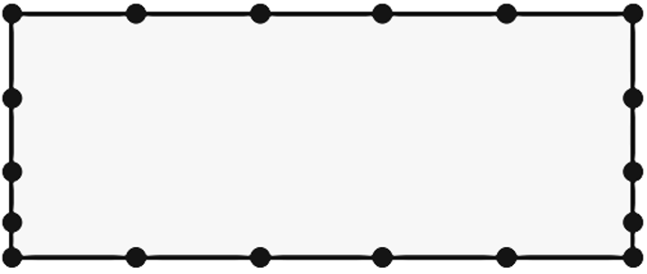
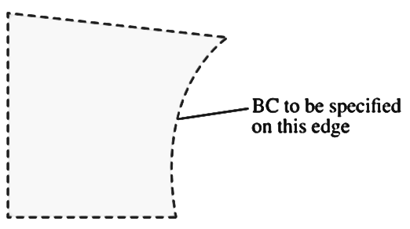

A structured grid consists of planar cells with four edges (2D) or volumetric cells with six faces (3D).
Although the cells may be distorted from rectangular, each cell is numbered according to indices \((i, j, k)\) that do not necessarily correspond to coordinates \(x, y\) and \(z\).
An unstructured grid consists of cells of various shapes, but typically triangles or quadrilaterals (2D) and tetrahedrons or hexahedrons (3D) are used.
Unlike the structured grid, one cannot uniquely identify cells in the unstructured grid by indices \(i\) and \(j\); instead, cells are numbered in some other fashion internally in the CFD code.
(1) A CFD code is used to solve a two-dimensional (x and y), incompressible, laminar flow without free surfaces. The fluid is Newtonian. Appropriate boundary conditions are used. List the variables (unknowns) in the problem, and list the corresponding equations to be solved by the computer.
(2) For the two-dimensional computational domain , with the given node distribution, sketch a simple structured grid using four-sided cells and sketch a simple unstructured polyhedral grid using at least one of each: 3-sided, 4-sided, and 5-sided cells. Try to avoid large skewness. Compare the cell count for each case and discuss your results.
(3) What is the standard method to test for adequate grid resolution when using CFD?
(4) List all the boundary conditions discussed in the lectures that may be applied to the right edge of the two-dimensional computational domain sketched in . Why can’t the other boundary conditions be applied to this edge?
1 This problem set contains 6 problems, and your final score will be based on the 4 problems on which you earned the highest scores.
2 Fluid Mechanics: Fundamentals and Applications Fourth Edition. Çengel and J. M. Cimbala, McGraw-Hill, New York (2018).